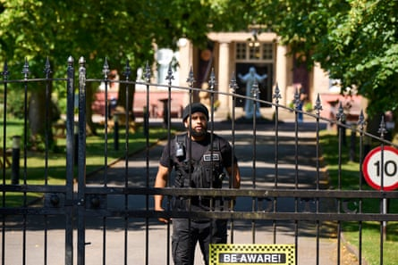
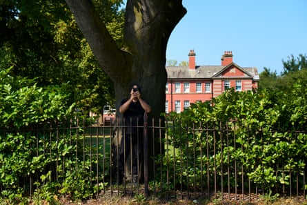
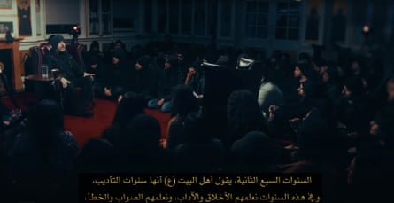
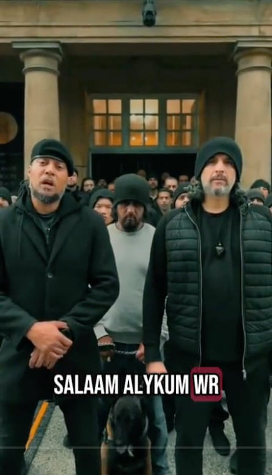
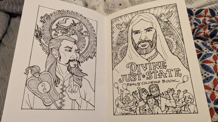

A religious sect, whose leader claims to be the new pope and whose followers say he can make the moon disappear, is operating out of a former orphanage in Crewe, Cheshire , where at least a dozen children are being home schooled.
The Ahmadi Religion of Peace and Light (AROPL) was founded by Abdullah Hashem, a former documentary maker turned self-proclaimed “saviour of mankind” who uses YouTube and TikTok to proselytise to potential recruits.
One such video appears to feature a primary school-aged girl claiming she was cured of stomach pains after Hashem placed his hand on her.
Hashem urges followers to sell their possessions and donate their salaries to his cause. The religious group blends Islamic theology with conspiracy theories about the Illuminati and aliens secretly controlling US presidents.
AROPL says it is a peaceful, open and transparent religious movement derived from Shia Islam that has faced persecution around the world owing to its belief in equality and human rights.

It relocated to the Cheshire town, in the north-west of England , in 2021, moving into a former orphanage, Webb House, a Grade II-listed building worth £2m. The group was previously based in Sweden. The members were in effect barred from the country after a slew of businesses linked to the organisation were found to be providing sham visas.
About 100 followers are said to live at the Crewe headquarters, including families with children who are home schooled on site. During a recent visit on a weekday afternoon, a reporter saw more than a dozen young children playing in a yard. Elsewhere, adults in black beanie hats sat eating lunch or walking large guard dogs. (Hashem and his followers routinely wear black beanies, even in hot weather.)
A man in a black beanie is one of those providing security at the former orphanage.Photograph: Christopher Thomond/The Guardian
The Ahmadi Religion of Peace and Light is registered as a charity in the US and has applied for charitable status in the UK.Photograph: Christopher Thomond/The Guardian
The Guardian has reviewed court judgments, company filings, religious scriptures and videos and hundreds of pages of official documents about the group and its members, and interviewed several former members.
Some, including former residents of the headquarters at Crewe, expressed concern about the wellbeing and education of the children there. Cheshire East council’s social services twice made inquiries relating to the group or the children. There is no evidence action was deemed necessary.
‘Duty’ to donate salary
Hashem, an Egyptian-American raised in Indiana, first made a name for himself making films in which he infiltrated and debunked cults in the US.
In 2008, he and his partner were sued after filming an undercover documentary about a Switzerland-based UFO religion. “We’re really building up our reputation for debunking the false prophet, UFO phenomenon,” Hashem told reporters while promoting his documentary.
Seven years later, he founded AROPL, declaring himself the Mahdi , a saviour figure from Islamic doomsday prophecy. He also claims to be the rightful pope , as well as the successor to the prophet Muhammad and Jesus.
Hashem’s scriptures are contained in his book, The Goal of the Wise. It declares his followers have a “duty” to donate their entire salary – keeping only deductions for basic living – and sell their houses or land to fund his mission to create a “divine” state.
Former members said they felt pressured to sever ties with people outside the group, and were encouraged to sell their properties to fund its activities. One woman said she handed over all the money she had received for her wedding; another follower said he donated about £33,000.
Webb House in Crewe has Grade II status.Photograph: Christopher Thomond/The Guardian
Hashem’s scripture promotes a number of unusual beliefs, such as his claim that epilepsy can be cured by placing a bird of paradise on a patient’s genitals.
A lawyer for AROPL and Hashem said no practices involving birds of paradise were conducted. They said that “in common with other religious orders” AROPL expected permanent residents to sell assets to help sustain themselves and the movement, and denied that members were encouraged to ostracise relatives or tightly controlled. The lawyer said members could join and leave AROPL as they wished.
The group has faced harassment and persecution, particularly in Algeria, Malaysia and Turkey, where many of its claims, such as the Qur’an having been corrupted or tolerance for LGBT people, are considered heresies. Amnesty International and other human rights groups have criticised alleged mistreatment of AROPL members, which UN experts have called “a persecuted religious minority”.
Supporters surround Abdullah Hashem in a video on the group’s YouTube channel.Photograph: The Ahmadi Religion of Peace and Light/YouTube
Slick media operation
For those in Crewe, regular gatherings take place in the “basilica”, a room with a raised wooden dais and walls covered with illustrations of the supporters Hashem has declared are reincarnations of religious figures.
The group operates a slick-media operation, and regularly produces and circulates videos about its activities. On one TikTok channel a large group of men, many wearing black beanies, declare they are “soldiers” for Hashem and will fight and die for him. One is holding a guard dog on a chain.
Some videos feature children. In one, a boy who says he is 16, describes Hashem as his “dad, imam, God”. In another video, which shows the apparently primary school-aged girl claiming Hashem miraculously cured her stomach pains, the child’s mother says she considered conventional medical advice before turning to her religious leader.
Members of the group call themselves ‘soldiers’ for Hashem.Photograph: Tiktok/Soldiers of the Qaim
“It reached a point that I was thinking, OK, now I feel I have to take her to the doctor,” she said. However, after seeing a video showing Hashem supposedly curing a man of stomach pains with his hands, she instead asked the religious leader to give her daughter the same treatment.
The video then shows the girl saying that Hashem placed his hand on her stomach: “He told me to close my eyes, and then he said some words, I don’t know which words,” she said. She added that Hashem then stepped away “and it actually worked … it feels good for my stomach and it’s really healed”.
AROPL’s lawyer, asked about the video, said Hashem and the group fully supported the NHS as the solution to all medical issues in the UK.
Two relatives of a teenager living at the Crewe premises told the Guardian he had previously told them that he was unhappy there and wanted to leave. They also expressed concerns about his lack of formal education.
It is legal in England to home school, although any group of more than five children must be registered with Ofsted, the UK government’s education inspectorate.
AROPL’s lawyer said the organisation was not involved in home schooling, which was led by parents. The group had considered setting up a formal school, the lawyer said, but had shelved the idea and “dismantled the classrooms”.
Hashem has warned his followers about the corrupting influence of mainstream education on children, and encouraged them to “take advantage of laws” in countries that enable home schooling. He recently told followers : “You can’t fully control what’s going on with your child so long as they are mingling on the outside with people that you don’t know.”
AROPL has applied for charitable status in the UK, with the Charity Commission currently considering the application. It has charitable status in the US, and has several hundred supporters around the world, who are asked to pledge allegiance to the group via social media.
The colouring book of a child whose family is part of the group.
Deportations from Sweden
The group was previously based in Egypt and Germany, before moving to Sweden, where 69 members had their residency permits revoked.
The Swedish Migration Agency concluded that AROPL members had created businesses that were “rogue employers”, intended primarily to obtain residency permits. The companies’ supposed staff received very low wages, which the agency suspected were then immediately paid into other AROPL businesses, leaving the workers without real payment.
In a series of rulings in 2022 an immigration court upheld the agency’s findings and ordered the deportation of dozens of the group’s members, although most had moved to the UK by the time the judgments were handed down.
In a statement, Hashem claimed followers served with deportation notices were victims of racist and religious persecution , and complained about “the spewing of racism for the sake of rallying a Nazi base of supporters to stand behind the fascist Swedish government”.
In Germany, where AROPL had been based before moving to Sweden, an investigation is continuing into the disappearance of a German member of the group.
Lisa Wiese disappeared while visiting India in 2019. She had travelled there with another member of AROPL, vanishing shortly after arrival, and has not been seen since. A lawyer for AROPL said the group did not have any information about the disappearance of Wiese, a mother of two.